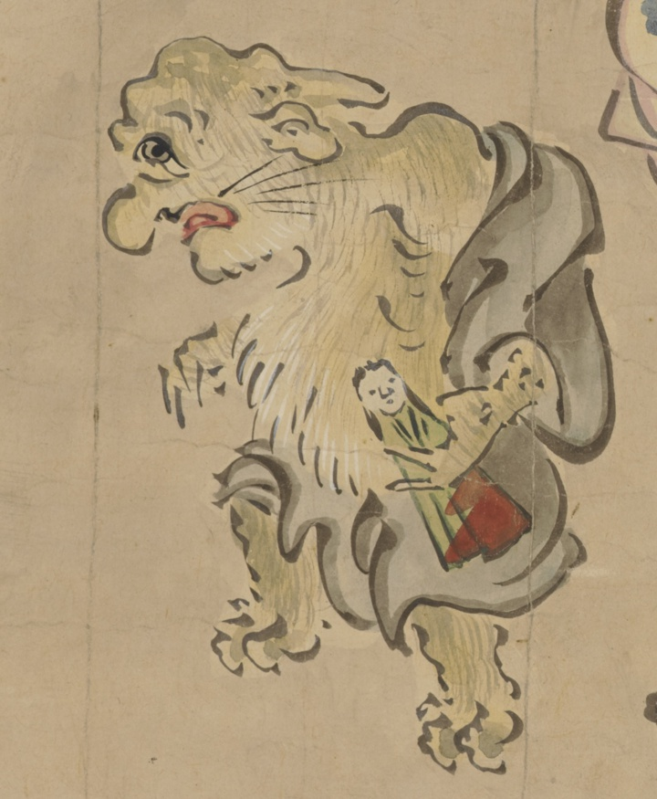

童；ワラベ，獣；ケモノ，動物；ドウブツ，雛；ヒナ，人形；ニンギョウ，子供；コドモ

童の妖怪。人形を持っている。全身に毛が生えている。角が生えている。
著作者：英一蝶／出典：親書誌：U426_nichibunken_0449：妖怪四季風俗絵巻／日付：2019／資源識別子：U426_nichibunken_0449_0001_0004
Copyright (c)2010- International Research Center for Japanese Studies, Kyoto, Japan. All rights reserved.